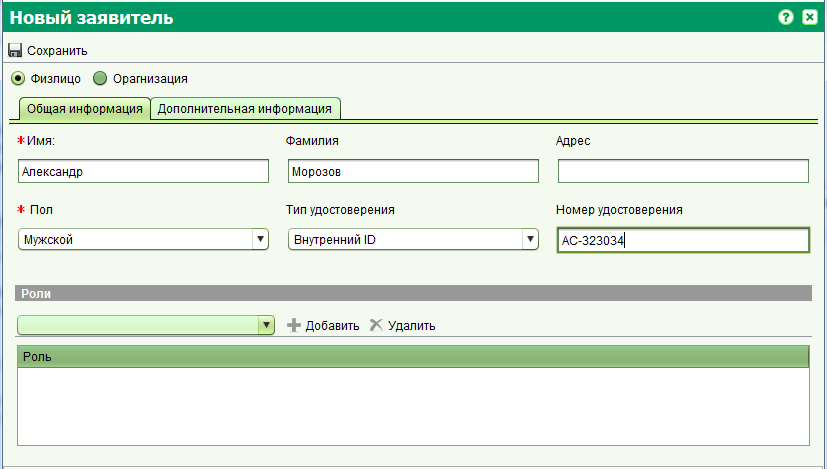

Форма заявителя позволяет вам создавать новое физическое или юридическое лицо, а также редактировать уже существующие записи. Введите необходимы данные для физического или юридического лица и по окончании нажмите кнопку "Сохранить и Закрыть".
